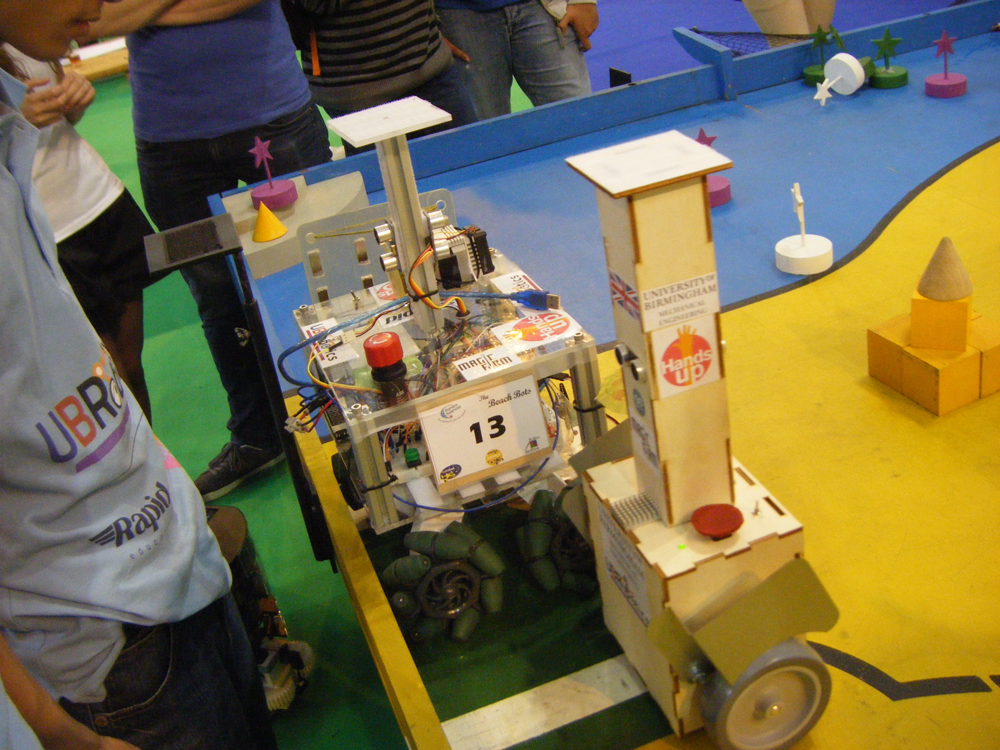
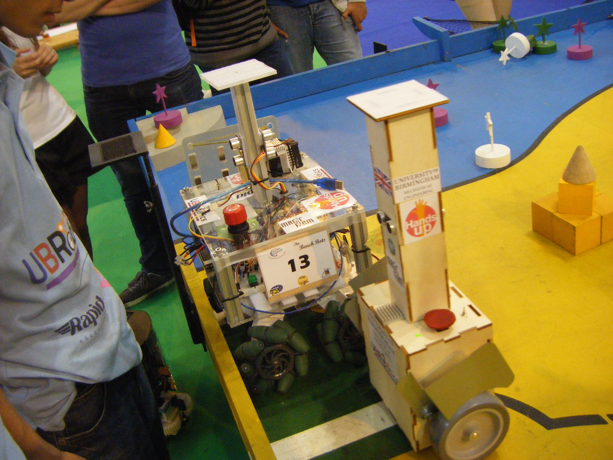

Mechanical Engineer in Robotics and Railway Systems, hobbyist musician and programmer
I am a Japanese engineering student at the University of Birmingham, currently undertaking an MRes (Master of Research) course in Railway Systems and Integration. Prior to my postgraduate study, I completed a BEng honours degree in Mechanical Engineering at the university and attended school in the Oxfordshire area of England. My speciality is in my application of computer programming skills in various languages to engineering control systems in numerous fields such as robotics, biomedical and railway engineering. Aside from my academics, I have been the president of the university's robotics club having achieved 3rd place in the UK Finals of the autonomous robotics competition Eurobot in 2015 and 2016, and also competed in the Eurobot Finals in France in 2016.
My skills include programming in object oriented languages such as MATLAB, Python, C++, Arduino, as well as web based languages such as HTML, CSS and JavaScript. I have 3D modelling experience using SolidWorks which I have also used for FE (finite element) and motion analysis. I have strong leadership skills from my time as director of the robotics club, and have experience in public interaction as a student ambassador at the university. A musician and music producer in my past-time, I have been playing electric guitar since 2009, having played in local pubs as part of various rock/metal student bands and producing demos using Audacity and GarageBand.